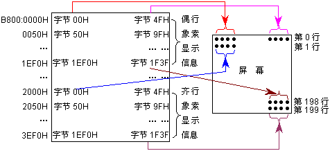
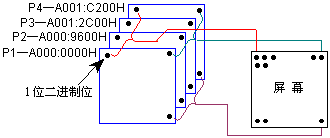
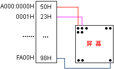

图形显示是目前最常用的一种显示方式，也是Windows操作系统的默认显示方式。在该显示方式下，我们可以看到优美的图象、VCD、浏览丰富多彩的网页等。
图形显示的最小单位是象素，对每个象素可用不同的颜色来显示。所以，在显示缓冲区内记录的信息是屏幕各象素的显示颜色。
由于各种图形显示模式所能显示的颜色和象素是不同的，它决定了显示缓冲区的存储方式也是不同的。下面给出三个具体的图形显示模式及其存储方式，通过它们可看出各种显示模式在显示缓冲区存储方式上的明显差异。
由于每个象素只能是四种颜色之一，而四种情况用2位二进制就可表示，所以，一个字节可表示4个象素的显示颜色，存储一行上的所有象素信息就需要80个字节。
在具体存储过程中，它又把偶数行象素和齐数行分开来存储。偶数行和齐数行的象素总数各有32000个，也都需要8000个字节来存储，并规定：偶数行象素从0B800:0000H开始存储，齐数行象素从0B800:2000H开始存储。该显示模式的存储形式如图8.8所示。

640×480图形显示模式共有307200个象素，每个象素可选用16种颜色，它需要用4位二进制来表示。该显示模式在存储显示信息时，把该4位分在四个位平面P1、P2、P3和P4上，所以，位平面Pi(i=1,2,3,4)共有307200个二进制位，即有38400个字节。其显示缓冲区的存储形式如图8.9所示。

由图8.9可看出：若要改变某个象素的显示颜色，则需要在每个位平面上修改其对应的二进制位。所以，若用操作显示缓冲区的方法来改变象素的颜色，那么编程将困难得多。在屏幕上显示一个点，必须遵循以下步骤：
对于该显示模式下，改变象素方法的详细描述和例子，请参阅参考书籍[2]、[4]，或其它有关技术资料，在此不再进一步展开叙述。
若用BIOS中断10H之功能0DH/0CH来读/写象素，则它可屏蔽掉各种显示模式的差异，用同样的参数完成同样的功能。所以，在此建议：使用系统中断的方法来实现对图形象素的操作。
表达256种不同颜色需要8位二进制，即一个字节。在该模式下，其显示缓冲区的存储方式是非常简单的，即：第一个字节存储第一个象素的颜色，第二个字节存储第二个象素的颜色，以此类推，所以，存储满屏象素所需要的字节数为：320×200×1＝64000。其显示缓冲区的存储方式如图8.10所示。
从上面三种不同图形显示模式的介绍，不难看出：各种显示模式在显示缓冲区存储方式上的明显差异，操作象素方法的难易程度相差也很大，所以，再次建议：程序员不要用直接操作显示缓冲区的办法来达到改变显示象素的目的，最好是通过BIOS内的中断功能来实现相应的功能，这样，所编写的程序能很方便地适应不同的图形显示模式。
